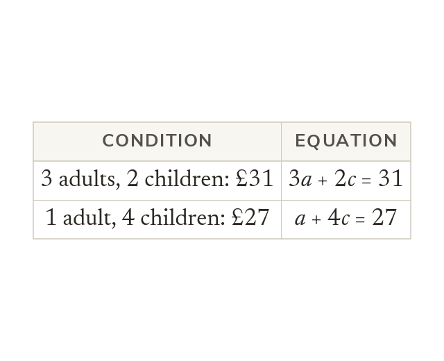
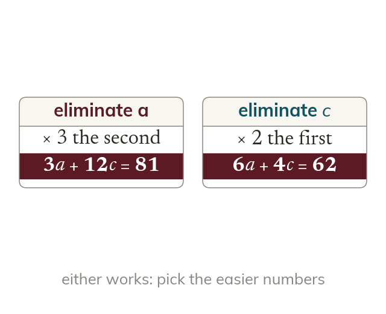
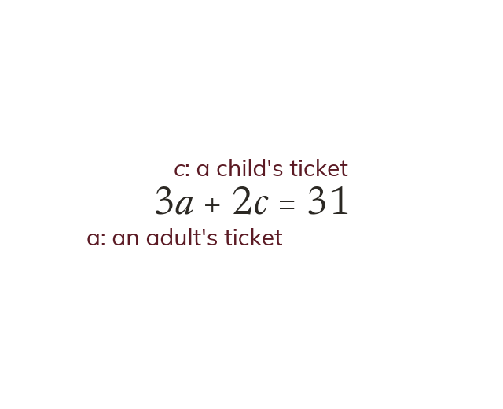
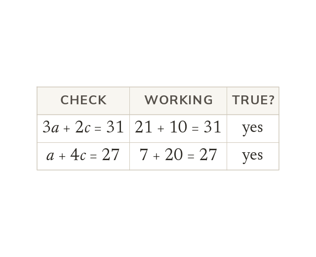
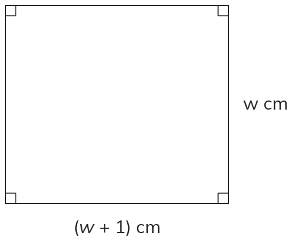

Two conditions, two equations
A worded problem gives two conditions, and each condition becomes one equation. The two unknowns are named explicitly, with letters, before either equation is written.
A worded problem hides two equations inside its sentences. Today is about digging them out, solving them, and not being thrown when the answer is negative or a fraction.
Work down the page at your own pace. Write every answer in your book first, then click to check it.
Read each card, then follow the worked examples one step at a time.

A worded problem gives two conditions, and each condition becomes one equation. The two unknowns are named explicitly, with letters, before either equation is written.

Eliminate whichever variable has the easier coefficients. A negative or fractional answer is checked the same way.
Pick an answer. If it's wrong, the feedback tells you which mistake it was.
Read each card, then follow the worked examples one step at a time.

Name the two unknowns before writing either equation. Use letters that say what they stand for.

Check any solution by substituting it into both original equations. e.g. and check in both.
Pick an answer. If it's wrong, the feedback tells you which mistake it was.

Finished? Next lesson: 9.14.6 Substitution Method.
Log in, then search for a code to practise that skill.
Videos, worksheets and more on each part of this lesson.